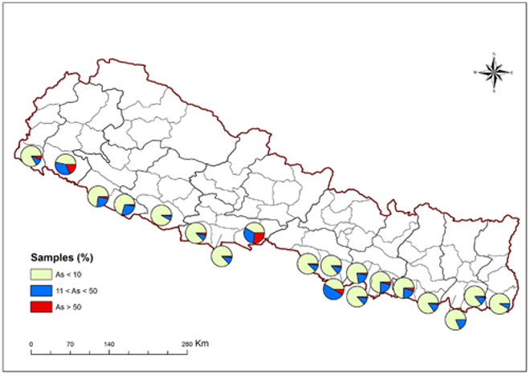
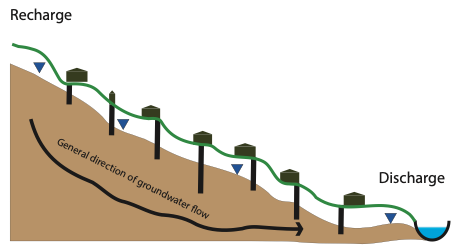
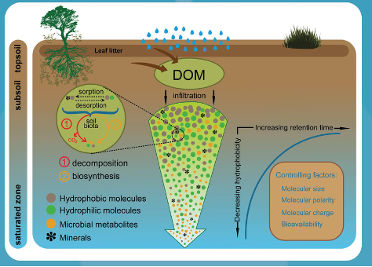
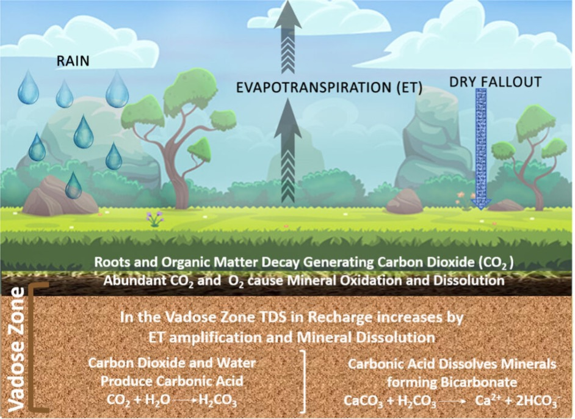
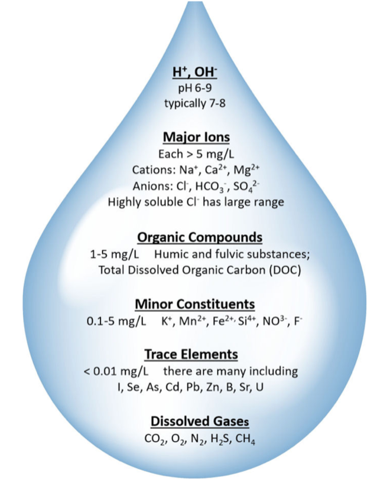
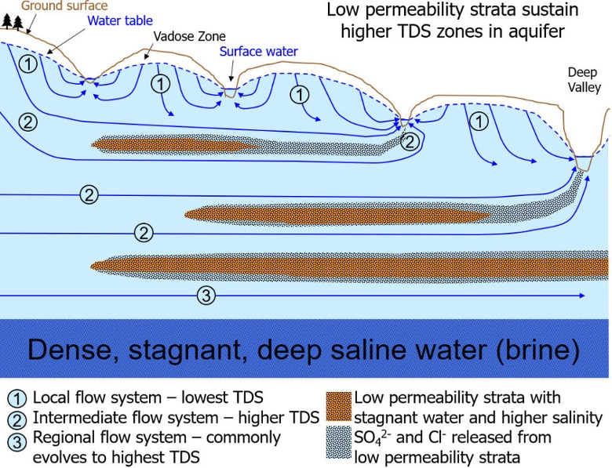
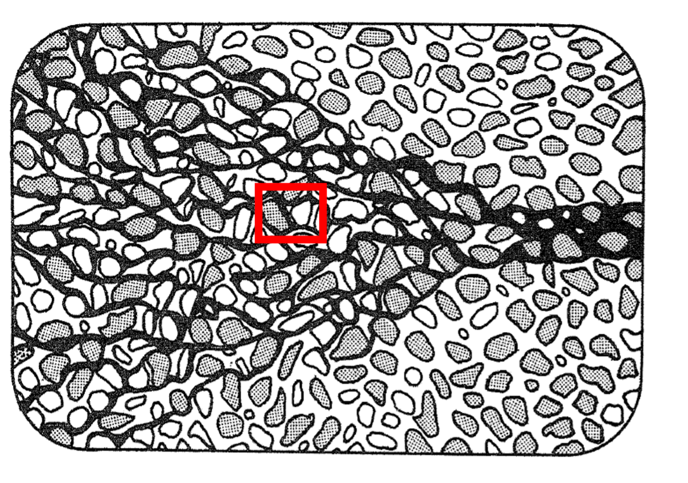
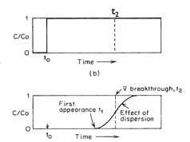
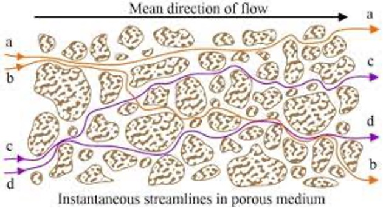
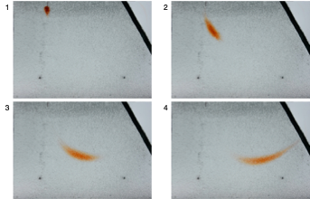

A key point from the groundwater lectures is the connection between groundwater
and surface water – that groundwater levels reflect changes in surface water.
In the lecture we showed data for a hydrograph – that is the level of water in
a river – and the underlying water table.
There is a small delay, but the water table follows changes in the flow
of the local river.
To explore this, we consider the case of arsenic poisoning in groundwater wells
in Nepal.
There is tremendous elevation change in Nepal, and this leads to temperature
gradients from the high Himalaya to the low plains, which in turn leads to
nearly an order-of-magnitude difference in annual rainfall.
In Nepal, groundwater supplies around 50% of the drinking water for the capital,
Kathmandu, and 90% of the drinking water for the bulk of the population in the
flood plains (Terai).
Only 34% of the population has access to clean drinking water.

Fig. 2.35 Arsenic distribution in groundwater in Nepal Terai districts,
showing the widespread contamination of shallow groundwater wells.#
We can consider what happens to the chemistry of groundwater along the flow path
to understand the chemistry of the drinking water in the flood plains
(Fig. 2.36).

Fig. 2.36 Schematic showing how groundwater chemistry evolves along the flow path
from recharge to discharge zones.#
How does the chemistry of groundwater change over distance?
Precipitation and Atmospheric Equilibration
Rain is the major source of water to groundwater systems.
Rain is in equilibrium with CO2 in the atmosphere,
and is slightly acidic (pH ~5.5-6.5).
Infiltration and Vadose Zone Processes
During infiltration, chemical reactions occur with soil minerals due
to leaching of organic carbon, and there is evapotranspiration which leads to
concentration of ions.
The water that infiltrates through the vadose zone is therefore slightly
acidic and with a higher concentration of ions and dissolved organic matter
(DOM).

Fig. 2.37 Schematic of the vadose zone showing plant roots, soil layers,
and the processes affecting infiltrating water.#

Fig. 2.38 Geochemical processes in the vadose zone, including organic matter leaching,
ion exchange, and mineral weathering.#
Mineral Dissolution
Along the groundwater flow path there is further dissolution of minerals
which contribute ions to the groundwater.
Ionic strength therefore increases along the flow path.
Typical ions that are picked up are shown in Fig. 2.39.

Fig. 2.39 Common ions found in groundwater, including major cations (Ca2+,
Mg2+, Na+, K+) and anions
(HCO3-, SO42-, Cl-).#
Key to this is an understanding of saturation state and where minerals are
undersaturated or oversaturated with respect to the fluids in the groundwater
system.
We express this using a solubility product for a mineral or salt.
Secondary Mineral Precipitation
The precipitation of secondary minerals can occur as groundwater becomes
supersaturated as it ages and changes its chemical composition.
The longer the flow path, the more altered the chemistry of the fluid will be.
In the deepest flow paths you can get exceptionally saline waters that form
from dissolution of salt (Fig. 2.40).

Fig. 2.40 Schematic summary of the distribution of Total Dissolved Solids (TDS) with
depth in groundwater, showing increasing salinity with depth and residence
time.#
Development of Anoxic Conditions
The longer groundwater is out of contact with the atmosphere,
the more likely it is to become anoxic – and lose its oxygen.
Remember that redox reactions are the ones that involve the exchange of
electrons.
In the subsurface there are many things that use up oxygen (respiration,
reaction with minerals) but there is no way to make new oxygen.
This evolving chemistry becomes a real problem for arsenic.
Arsenic-bearing minerals are easily weathered (chemically dissolved) in anoxic
conditions, and in particular when there is a lot of dissolved organic matter
which binds to the arsenate ions.
Increased human waste at the surface is increasing the flux of organic matter
into the subsurface and creating increasingly anoxic conditions that are
accelerating the weathering of arsenic.
Having understood a bit about how the chemistry of groundwater evolves along the
flow path, we can consider what happens when we add a contaminant to groundwater
and how it is likely to travel and disperse through the groundwater system.

Fig. 2.41 A control volume in groundwater showing solute transport by advection and
dispersion, with possible chemical reactions within the box.#
If we consider a control volume in the groundwater where we have flow of a
contaminant (or molecule or element – here we will call it a ‘solute’, meaning
a component dissolved in groundwater) through that volume, we can apply mass
conservation to this box.
Solute can move into the box or out of the box, and chemical reactions can
create or destroy solute within the box (e.g. mineral dissolution or
precipitation).
This allows us to consider the net rate of change of the concentration of the
solute within the box.
So how does the solute, or contaminant, move through the control volume?
Advection causes the wholesale movement of the solute with the flow field at
the same velocity as the flow field.
So if we have a solute (like a contaminant) in groundwater, and the groundwater
is moving at a velocity of 5 meters per year, then if we return one year later,
we expect the contaminant to have moved 5 meters away.

Fig. 2.42 The effect of advection on contaminant movement over time from t0 to t2,
showing the displacement of the solute plume with the groundwater flow.#
Fig. 2.42 shows the effect of advection on the movement of a
contaminant over time from t0 to t2.
In reality what we find is that over this time we often get more than just the
movement of the contaminant in the flow field but also the spreading out of the
concentration.
This is the effect of diffusion and hydrodynamic dispersion.
Fig. 2.43 Illustration of dispersion processes showing how a contaminant plume spreads
due to molecular diffusion and mechanical dispersion.#
Dispersion comprises molecular diffusion and hydrodynamic or mechanical
dispersion.
Molecular Diffusion describes the spread of particles through random
motion from regions of higher concentration to regions of lower concentration.
It is governed by Fick’s First law, where the overall flux due to molecular
diffusion is given by a diffusion coefficient (determined in the lab) and the
concentration gradient:
where \(J\) is the diffusive flux, \(D\) is the diffusion coefficient,
and \(\pdv{C}{x}\) is the concentration gradient.
Mechanical Dispersion reflects the fact that not everything in the porous
medium travels at the average water flow speed.
Some paths are faster, some slower, some longer, some shorter.
This results in a net spreading of the solute plume that looks very much like
a diffusive behavior.

Fig. 2.44 Modelling of the mechanical dispersion in porous media,
showing variations in flow paths through the pore structure.#
Since mechanical dispersion depends on the flow, it is expected to increase
with increasing flow speed.
The most common expression for mechanical dispersion is given by:
where \(D\) is the mechanical dispersion coefficient, \(\alpha\) is the dynamic
dispersivity, and \(v\) is the average linear velocity.
Note that given the very slow rate of molecular diffusion, advection and
hydrodynamic dispersion tend to dominate contaminant transport in groundwater.

Fig. 2.45 Summary diagram showing the combined effects of advection, dispersion,
and chemical reactions on contaminant transport in groundwater.#
When solutes flow through a porous medium they can interact with the solid
phase.
In particular they can sorb and desorb, or precipitate into mineral phases.
The net result is a process called retardation that effectively slows the
transport of a solute through a porous medium.
The amount of these chemical reactions and how they impact the overall
chemical transport depends on the solute, water chemistry, and geochemical
makeup of the porous medium.
Having discussed advection, dispersion, and chemical reactions individually,
we can now consider how they combine in a mathematical framework.
In previous lectures, we learned the tools needed to determine how long before a
contaminant released into the groundwater would be seen at some point downstream.
We could figure out the lines of equipotential and the hydraulic conductivity, and then calculate the flow velocity, which would yield time
(with some knowledge of the distance travelled).
However, like most things, it is more complicated than this.
The contaminant is not just subject to advection with the flow of the
groundwater, but also diffusion (the process by which things move from high
concentration to low concentration) and possibly chemical reaction with the
porous media.
This leads to an entirely different class of equations and models known as
advective-diffusive transport models.
We will not go through the mathematics of these models in detail, but the
standard formula is:
(2.19)#\[D \frac{\partial^2 C}{\partial x^2} - v \frac{\partial C}{\partial x} = R \left( \frac{\partial C}{\partial t} \right)\]
Where \(C\) is the contaminant concentration, and we are interested in how its
concentration changes with time \(\left( \frac{\partial C}{\partial t} \right)\)
and with distance \(\left( \frac{\partial C}{\partial x} \right)\).
Because there are changes with time and with distance, we need to use a partial
differential equation.
In the partial differential equation above, \(D\) is the diffusion coefficient for
the contaminant in water, \(v\) is the flow velocity
\(\left( \frac{-K}{\rho} \dv{h}{x} \right)\) (can you figure out why this is the
flow velocity from Darcy’s Law?), and \(R\) represents the chemical reactions that
change the concentration with time.
Diffusion can be molecular diffusion or mechanical dispersion, and the types of
chemical reactions that change the concentration vary depending on the
contaminant and the geochemical environment.